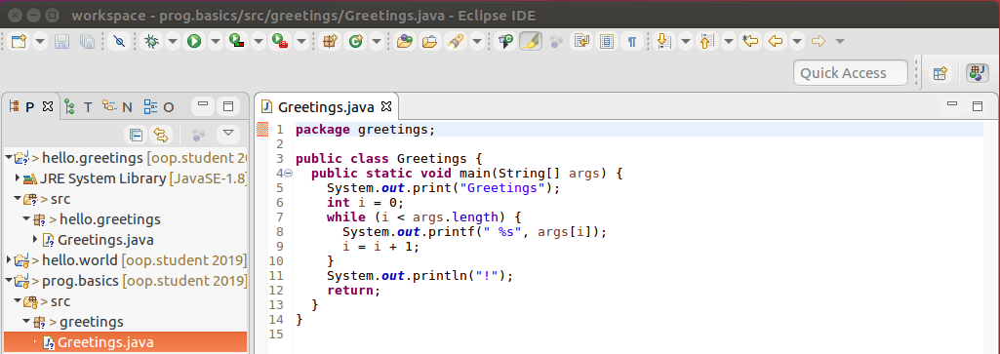
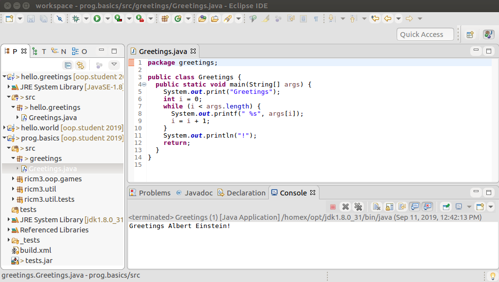

sprint=prog.basics
task=t2
step=t2-s2
If you haven't done so already, open a terminal window and
start Eclipse on the workspace.
Eclipse will show you the Java perspective, normally.
If it does not, just switch to that perspective.
You don't remember how, go back to the previous step.
Note that the project: prog.basics still appears as a
project in the Package Explorer view, on the left-hand side of
the Eclipse workbench. Notice that you can see the source folder
"src".
Eclipse va vous montrer la perspective Java normalement.
Si ce n'est pas le cas, allez dans cette perspective.
Si vous ne vous rappelez pas comment, allez à l'étape précédente.
Notez que le projet prog.basics apparait toujours
comme un projet dans la vue Package Explorer,
sur le coté gauche du workbench Eclipse.
Notez que vous pouvez voir le source folder "src".
Creating Packages and Classes
It is time to learn how to create packages and classes.
Hey, wait, you should know how to do this already.
So go ahead, in the source folder "src":
Il est temps d'apprendre à créer des packages et des classes.
Mais attendez, vous devez savoir faire. C'est parti dans
le dossier source "src".
-
Create a package
greetings.
-
Create a class
Greetings.
Now, let's fill up the source of our
class Greetings.
You can open any file in Eclipse:
Menu → File → Open File.
So go ahead, open the file "Greetings.java"
we created in the previous task in the "hello.greetings"
project in our workspace.
Then, just copy and paste the source in our new
class Greetings
in the
package greetings
in the Eclipse project
prog.basics.
Maintenant, remplissons le source de la classe
Greetings.
Vous pouvez ouvrir n'importe quel fichier dans Eclipse:
Menu → File → Open File.
Donc ouvrez le fichier "Greetings.java"
que nous avons créé dans la tâche précédente dans
le répertoire "hello.greetings".
Puis copiez et collez le source dans une nouvelle
classe Greetings
dans le package greetings
dans le projet Eclipse
prog.basics.
You should see something like this:

Automated Compilation
Remember, the compilation of your classes is fully automated
in Eclipse, but only when you save
your changes. So always check if there are "*"
in front of the tab names, such as "*Greetings".
If you save
your changes, using the "Ctrl-S" shortcut, or the menu
File → Save, the "*" disappears and
Eclipse will automatically recompile your modified source.
Rappelez-vous, la compilation de vos classes est totalement
automatisée dans Eclipse, mais seulement quand sous sauvez
vos modifications. Donc vérifiez souvent s'il y a une "*"
devant vos noms de fichiers, comme par exemple "*Greetings".
Si vous sauvez vos changements, en utilisant le raccourci "Ctrl-S",
ou le menu
File → Save, l'"*" disparait et
Eclipse recompile automatiquement votre source.
Launching an execution
Once Eclipse compiled your classes, you can launch the execution.
We already did that before. Remember? If not, go back to the
third step of the first
task.
Notice that we launch the execution under debugger.
Always do so, unless you have a very good reason not to.
If you need to pass arguments to your program,
do so via launch configurations. To see/modify your launch
configurations, you can do it from the debugger icon
.
Select the drop-down menu with the little black triangle
and then select "Debug Configurations".
If you want to change the arguments given to the
method main,
select the tab "Arguments" and fill in the
"Program arguments" with your arguments.
Notez que nous avons lancé l'exécution depuis le debugger.
Faites toujours cela, à moins d'avoir une bonne raison de
ne pas le faire. Si vous avez besoin de passer des arguments
à votre programme, faites le via les configurations de lancement.
Pour voir ou modifier vos configurations, vous pouvez le faire
par l'icône du debugger
.
Selectionez dans le menu déroulant (le petit triangle noir)
l'option "Debug Configurations".
Voyez vous l'onglet Arguments? Il vous permet
de changer les arguments passés à la méthode
main.
Rajoutez les arguments "Albert Eintein".
Add the arguments "Albert Einstein" and apply your changes.
Now let's execute the configuration we just created, with
the name "Greetings", using the debugger icon
.
Look at the "Console" view and see the correct
output: Greetings Albert Einstein!.

Congratulations!
Hey, wait a second, let us check that you did succeed before we congratulate you.
We will check that you created
a class Greetings
in the package
greetings.
We will also test that it prints any argument given to it.
Like this:
Félicitations!
Attendez une seconde, laissez nous vérifiez que vous avez réussi avant
de vous féliciter.
Nous allons vérifier que vous avez créé une classe
Greetings
dans le package
hello.greetings.
Nous allons aussi tester qu'elle affiche tous les
arguments qui lui sont donnés en entrée.
Comme cela:
If you pass the test below, there is a good chance you did it
correctly. If you do not, you missed something. Fix your
code and retry. If you do not succeed, after trying to fix
your code, please ask for help from those who succeeded.
Hum, seems you didn't get it quite right.
Please check your prog.basics project
in the workspace directory:
-
Make sure that you have a file called Greetings.java under
the "src/greetings" directory.
-
Make sure that you also have a file called "Greetings.class"
under the "bin/greetings" directory.
-
Make sure that you can load and execute your class Greetings
like this:
Ask for help if you need to.
The output box is the output of the failed test.
Have a look, you may see the reason why your code failed our test.
If it is too complicated for you, as a beginner in Java programming,
it is not a problem, ask for help.
Cool. Congratulations seems in order!
We will now move onto debugging with Eclipse.